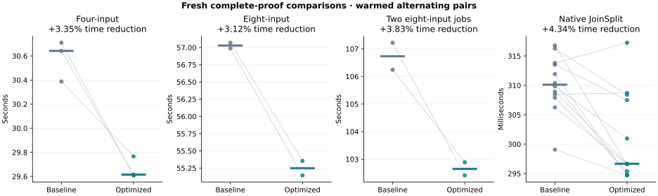
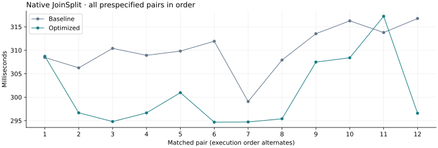

21 October 2026 · Tesla V100-PCIE-32GB · fixed 250 W cap
This fresh campaign compares the exact pass-7 extension_dot binaries with matrix_carry.
Each new proof uses fresh randomness and independent CPU verification. The baseline source was verified against all 691 prior build pins.
Retained the V100 matrix carry optimization. All seven aggregation pairs improved: median latency fell 3.35% for four inputs, 3.12% for eight inputs and 3.83% for two concurrent jobs. Native median latency fell 4.34%, with 10/12 paired wins and a 2.99% median within-pair reduction. All 45 targeted tests and 192 fresh benchmark proofs passed. These are bounded V100 fixture measurements with limited sample counts, not production qualification.
Seconds, warmed alternating pairs. Every prespecified sample is retained. Positive reduction means lower latency.
| Workload | Baseline median | Optimized median | Pooled reduction | Median paired reduction | Paired wins |
|---|---|---|---|---|---|
| Four-input aggregation | 30.642396 | 29.614815 | +3.35% | +3.35% | 3/3 |
| Eight-input aggregation | 57.028974 | 55.248946 | +3.12% | +3.12% | 2/2 |
| Two concurrent eight-input jobs | 106.733194 | 102.648635 | +3.83% | +3.82% | 2/2 |
| Native JoinSplit | 0.310122 | 0.296667 | +4.34% | +2.99% | 10/12 |


The width-eight Poseidon matrix reducer now consumes reconstruction and modular-fold carries directly with PTX add.cc and addc.
This removes compiler-generated carry comparisons in the bounded reduction. The existing NVIDIA V100 capability-7.0 gate selects the sequence.
The portable preprocessed code is identical to the baseline. NTT code and scheduling, memory admission, proof parameters, randomness and verifiers are unchanged.
Let B = 2³² and p = B² − B + 1. For 0 ≤ low, high ≤ 21(B − 1), the reconstructed value S = low + high·B is at most 21(B² − 1). Its high 64-bit word is therefore at most 20. Folding this word uses B² ≡ B − 1 modulo p. If that addition carries, adding B − 1 again produces at most 21(B − 1) − 1, which cannot overflow 64 bits. Both external and fixed internal matrix callers already satisfy the limb bound.
src/gpu.rssrc/gpu/arithmetic_tests.rs| Workload | Kernel category | Baseline seconds | Optimized seconds | Reduction |
|---|---|---|---|---|
| Four-input aggregation | lde_ntt | 5.635466 | 5.639704 | -0.08% |
| Four-input aggregation | lde_absorb | 4.852772 | 4.147019 | +14.54% |
| Four-input aggregation | device_extension_quotient | 2.050203 | 2.052087 | -0.09% |
| Native JoinSplit | lde_ntt | 0.010882 | 0.010949 | -0.61% |
| Native JoinSplit | lde_absorb | 0.014723 | 0.013195 | +10.38% |
| Native JoinSplit | device_extension_quotient | 0.001206 | 0.001204 | +0.17% |
All eight profiles have zero dropped events and zero events missing submission metadata. Row-hashing kernels report zero private bytes for both builds. Event totals and inclusive host spans are nonadditive; uncovered event intervals do not establish GPU idle time.
| Screen | Variant | Faster shapes | Kernel-time reduction range |
|---|---|---|---|
| ntt | compact | 15/26 | -3.75% to +2.63% |
| ntt | expanded | 16/26 | -2.39% to +4.85% |
| ntt-paired | compact | 16/26 | -2.95% to +3.35% |
| ntt-paired | paired | 13/26 | -7.95% to +11.99% |
| ntt-specialized | columns | 17/26 | -2.00% to +2.41% |
| ntt-specialized | geometry | 21/26 | -5.46% to +2.33% |
| matrix | ptx | 6/6 | +9.88% to +15.28% |
| matrix | narrow | 0/6 | -9.01% to -3.38% |
Three NTT experiments tested precomputed butterfly tables, paired butterfly stages in registers, and fixed tile geometry. Their mixed results did not justify changing production NTT code. The selected PTX matrix reducer improved every screened row-hash shape. Narrowing the portable carry variable was slower in all six shapes. These are isolated kernel measurements; complete-proof measurements above determine the application result.
The matrix screen independently checked 283,753 bounded limb pairs, 66,732 full-u64 matrix inputs and 1,708 full permutations. Each NTT screen checked 84 configurations against a Python integer NTT, with direct DFT cross-checks for the smallest shapes, then compared complete outputs for all timed shapes. An initial matrix harness setup failed because it omitted its oracle entrypoint; it produced no timings. The corrected run and setup-failure log are retained.
45 targeted tests passed, including the bounded reducer against both selected and portable arithmetic, carry-edge cases, field and extension arithmetic, NTT, witness, device guard and native entrypoints. CPU-only and GPU-without-tuning compilation passed. The campaign independently CPU-verified 60 outputs representing 192 fresh benchmark proofs. All required GPU stages were present; proof/root hashes were unique and native public-input tamper checks passed.
| Test group | Passed |
|---|---|
| field-device-guard | 1 |
| scalar-absorb-oracle | 1 |
| parameter-guard | 1 |
| tuning-policy | 3 |
| witness-host | 6 |
| witness-budget | 1 |
| ntt-local-memory | 5 |
| ntt-and-tuning-gpu-oracles | 4 |
| arithmetic-oracles | 10 |
| dft-and-commitment-oracles | 6 |
| witness-parity-reference | 2 |
| witness-parity-fusion | 2 |
| witness-rejection | 2 |
| native-wallet-entrypoints | 1 |
| Workload | Baseline peak GPU GiB | Optimized peak GPU GiB | Baseline peak RSS GiB | Optimized peak RSS GiB |
|---|---|---|---|---|
| Four-input aggregation | 11.746 | 11.746 | 1.239 | 1.229 |
| Eight-input aggregation | 8.576 | 8.512 | 1.244 | 1.246 |
| Two concurrent eight-input jobs | 17.020 | 17.020 | 2.435 | 2.462 |
Peak resources are sampled maxima across qualification runs. Brief native calls can report zero sampled GPU memory; this does not mean they used zero VRAM. All unchanged admission and watchdog budgets passed. Compiler private-byte metadata is distinct from sampled GPU memory.
First source-use JIT profiles and warmups are retained separately and excluded from qualification medians. Builds and other GPU work did not overlap proof timing.
Structured evidence and all samples · Incremental source patch · Controller, source and report archive
Local executables, independent CPU auditors and proof artifacts remain pinned in the campaign manifests. Large executables and proof binaries are excluded from the archive. The final integrity file hashes the selected sources, measurement JSON and report artifacts, and checks the prior campaign's immutable evidence.
python3 benchmark-results/gpu-extensive-20261021-pass8/campaign.py four matrix_carry replay-01 python3 benchmark-results/gpu-extensive-20261021-pass8/wallet.py sample matrix_carry replay-01
These commands create fresh proofs and repeat the CPU audit in the recorded V100 environment.